Yale School of Public Health News
"Yale study: U.S. could save $184 billion by aligning drug prices with peer nations."
2026.01
Yang Ye
Associate Research Scientist, Yale School of Public Health
Yale Center for Infectious Disease Modeling and Analysis (CIDMA)
Affiliated Faculty, Yale Institute for Global Health
About
👋 Hi! I am Yang Ye. I am an Associate Research Scientist at the Yale Center for Infectious Disease Modeling and Analysis (CIDMA), directed by Prof. Alison Galvani. My research focuses on developing data-driven, decision-support models for infectious disease dynamics and health policy, spanning three interconnected lines: (i) advancing modeling frameworks for infectious disease dynamics; (ii) availability, affordability, and equity of vaccines and medications; and (iii) policy modeling for population health. My previous work has been published in top-tier journals such as Nature Human Behaviour, Nature Communications, PNAS, and The Lancet Obstetrics, Gynaecology, & Women's Health, as well as featured in the press such as The Washington Post and The Guardian.
I earned my BS in Logistics Management from Huazhong University of Science and Technology in 2019 and my PhD in Data Science from City University of Hong Kong in 2023, under the supervision of Prof. Qingpeng Zhang. After my PhD, I joined CIDMA as a Postdoctoral Associate with Prof. Galvani.
Experience
- 2025.08 – presentAssociate Research Scientist, Yale Center for Infectious Disease Modeling and Analysis (CIDMA), Yale School of Public Health
- 2026.02 – presentAffiliated Faculty, Yale Institute for Global Health
- 2023.08 – 2025.07Postdoctoral Associate, CIDMA, Yale School of Public Health
- 2021.07 – 2021.09Visiting Scholar, UNC Project-China
Scholarships and Awards
- 2021, 2022Outstanding Academic Performance Award for Research Degree Students, CityU
- 2021, 2022Research Tuition Scholarship, CityU
- 2016, 2017China National Scholarship (highest undergraduate honor in China), HUST
Research Highlights
Infectious diseases


Health policy
Media Coverage
UF Emerging Pathogens Institute
"AI and epidemiology: Can combining the two predict pandemics?"
2025.07
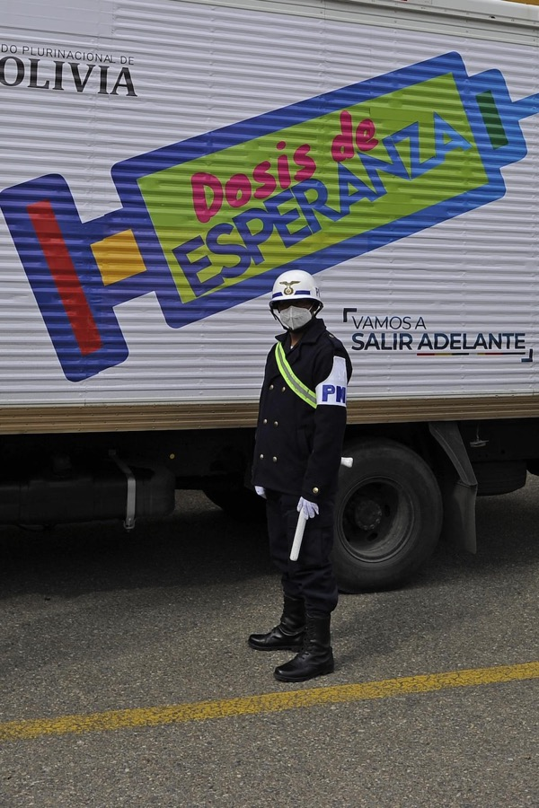
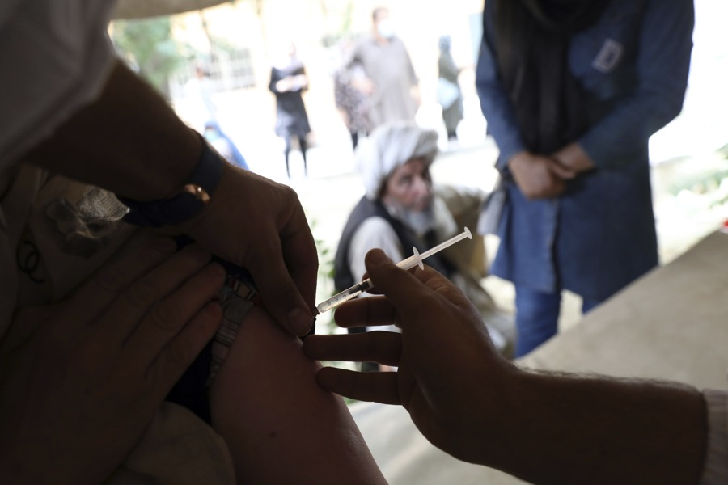
The Washington Post
"The benefits of vaccinating the world are clear. The catch is the price tag."
2022.02
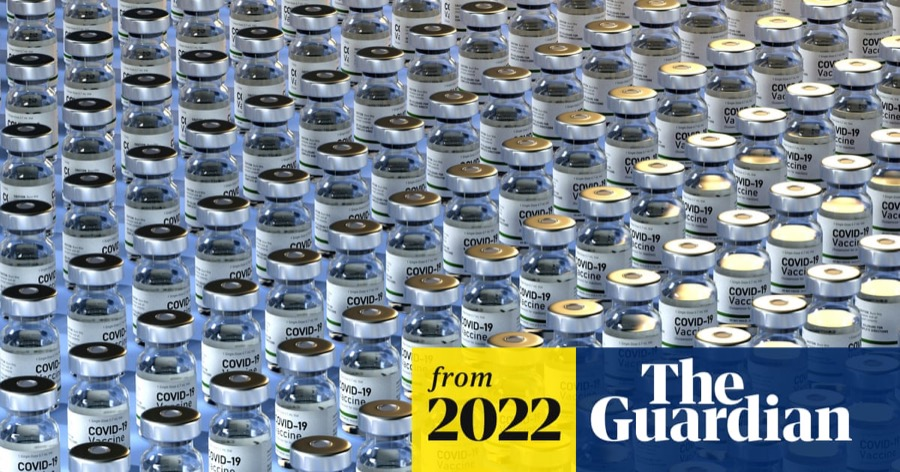
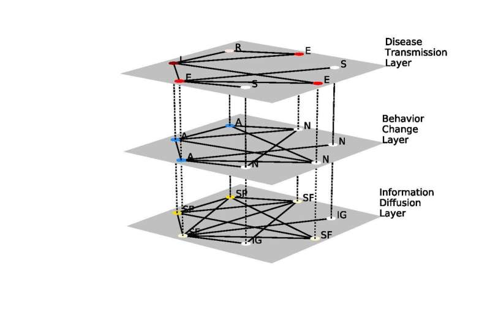
PhysOrg / CityU Research Stories
"Mathematical model verifies a correct understanding of epidemic's severity facilitates disease control."
CityU Research Stories ↗
2021.01 / 2020.12
Also covered by
- The Conversation — "Inteligencia artificial para prevenir y diagnosticar el dengue." 2025.08
- Connecticut Public Radio — "Access to weight-loss injectables remains limited for most needy in the US, Yale study finds." 2024.11
- Yale Health & Medicine News — "Expanding Access to Weight-Loss Drugs Could Save Thousands of Lives A Year, Study Finds." 2024.10
- Nature Asia — "COVID-19: 46% vaccine redistribution best for high- and low-income countries alike." 2022.02
- CityU News — "Enhanced vaccine donation drive can end COVID-19 pandemic." 2022.02
- Gavi — "A big win-win: Vaccine sharing could protect against future COVID-19 waves." 2022.01
Selected Publications
2026

Ye, Y., Pandey, A., Fitzpatrick, M. C., & Galvani, A. P.
(2026). US savings from international reference pricing for pharmaceuticals crucial to women's health.
The Lancet Obstetrics, Gynaecology, & Women's Health, 2(6), e490–e491.
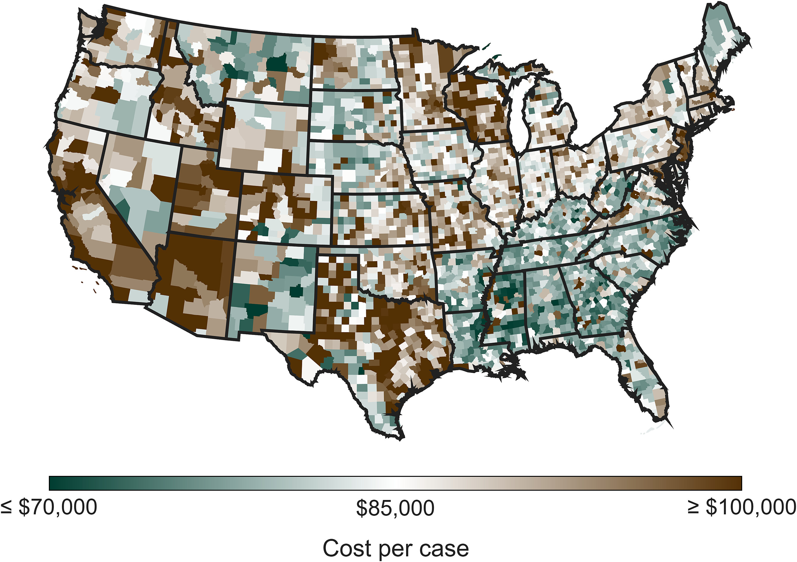
Wells, C. R., Pandey, A., Ye, Y., Bawden, C., Giglio, R., Wong, C., Wang, V., Cipriano, C., Ayaz, L., Röst, G., Moghadas, S. M., Fitzpatrick, M. C., Singer, B. H., & Galvani, A. P.
(2026). The health and economic repercussions of declining MMR coverage in the United States.
Proceedings of the National Academy of Sciences, 123(17), e2605971123.
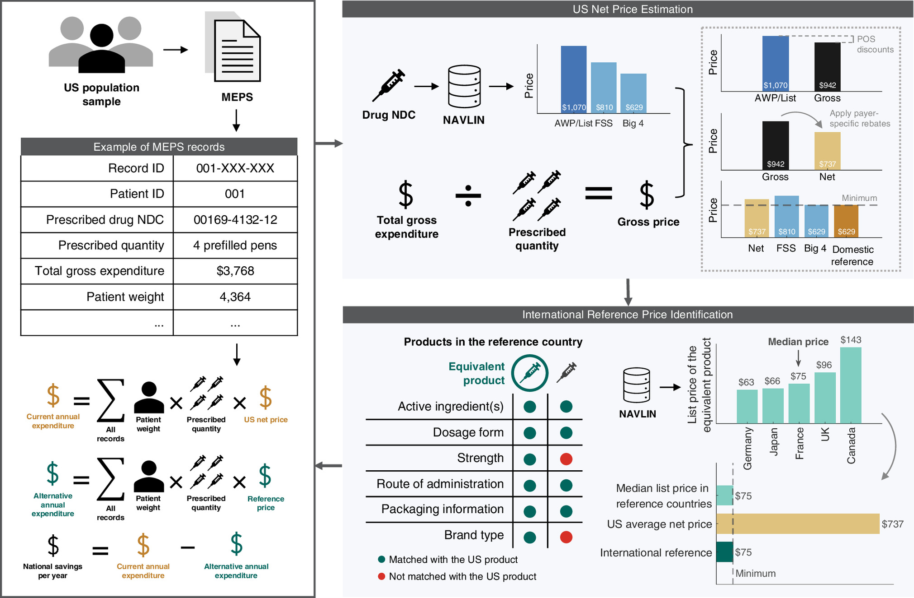
Ye, Y., Pandey, A., Fitzpatrick, M. C., Potter-Schwartz, L., Bawden, C., Bilori, B., Singer, B. H., & Galvani, A. P.
(2026). Estimating US savings on outpatient prescription pharmaceuticals from international reference pricing.
Proceedings of the National Academy of Sciences, 123(2) e2520871122.
🌟 Press Highlights
2025

Pandey, A., Ye, Y., Bawden, C., Singer, B. H., & Galvani, A. P.
(2025). Quantifying the mortality and morbidity impact of medicaid work requirements: a modeling study.
The Lancet Regional Health – Americas, 51, 101232.

Ye, Y., Pandey, A., Bawden, C., Sumsuzzman, D. M., Rajput, R., Shoukat, A., et al.
(2025). Integrating artificial intelligence with mechanistic epidemiological modeling: a scoping review of opportunities and challenges.
Nature Communications, 16(1), 1–18.
🌟 Editors' Highlights

Sumsuzzman, D. M., Ye, Y., Wang, Z., Pandey, A., Langley, J. M., Galvani, A. P., & Moghadas, S. M.
(2025). Impact of disease severity, age, sex, comorbidity, and vaccination on secondary attack rates of SARS-CoV-2: a global systematic review and meta-analysis.
BMC Infectious Diseases, 25(1), 215.
2024
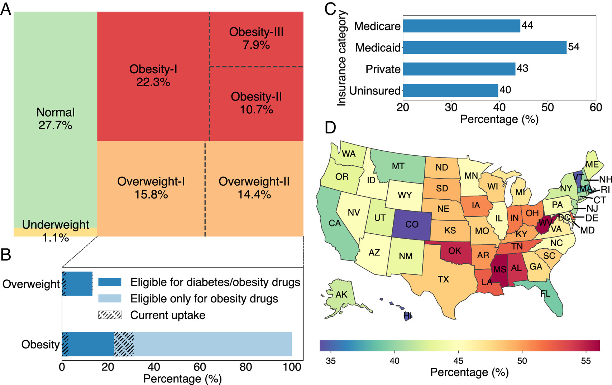
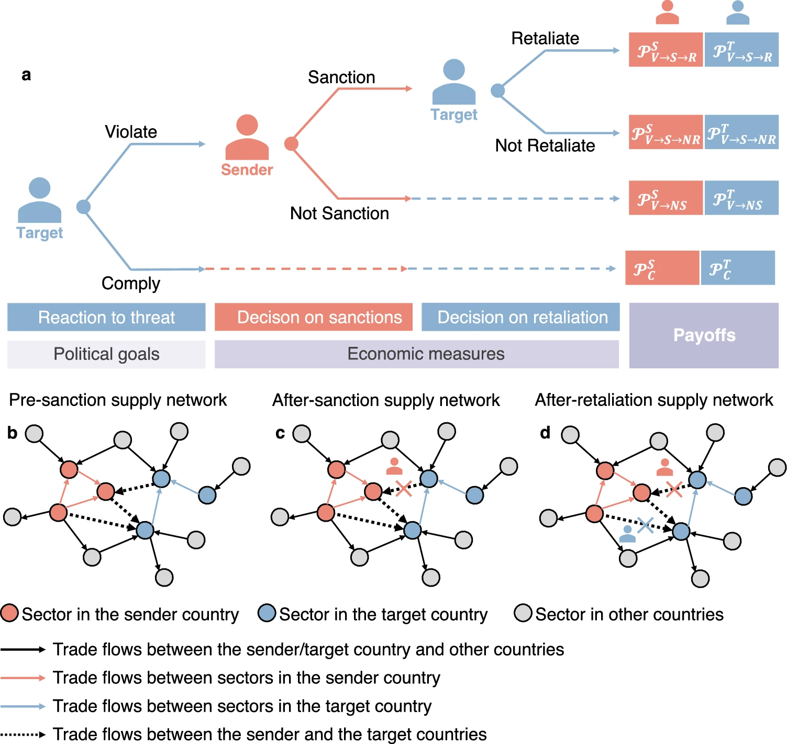

2023
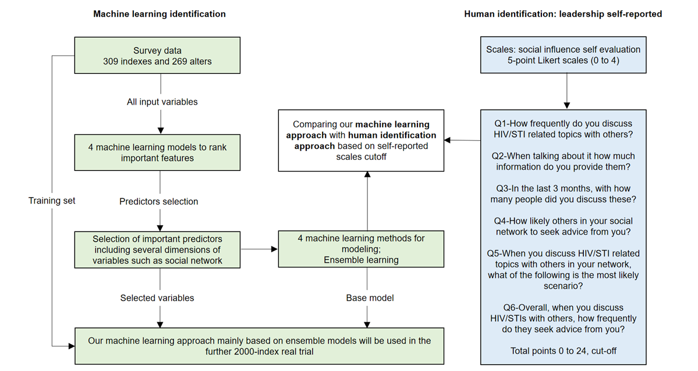
Jing, F., Ye, Y. (joint first author), Zhou, Y., Ni, Y., Yan, X., Lu, Y., et al.
(2023). Identification of Key Influencers for Secondary Distribution of HIV Self-Testing Kits Among Chinese Men Who Have Sex With Men: Development of an Ensemble Machine Learning Approach.
Journal of Medical Internet Research, 25, e37719.

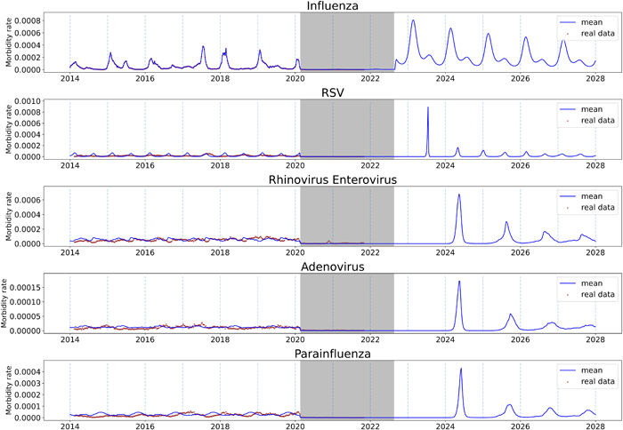
Cheng, W., Zhou, H., Ye, Y., Chen, Y., Jing, F., Cao, Z., Zeng, D. D., & Zhang, Q.
(2023). Future Trajectory of Respiratory Infections Following the COVID-19 Pandemic in Hong Kong.
Chaos, 33(1), 013124.
2022
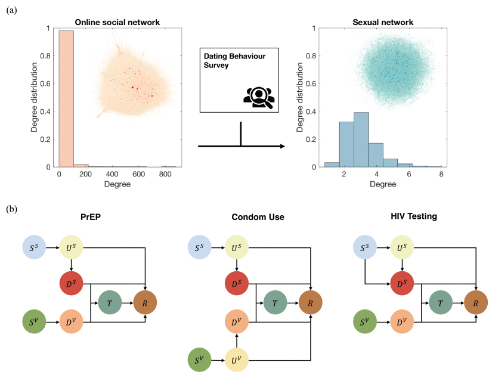
Ye, Y., Ni, K., Jing, F., Zhou, Y., Tang, W., & Zhang, Q.
(2022). Model-Informed Targeted Network Interventions on Social Networks Among Men Who Have Sex With Men in Zhuhai, China.
IEEE Transactions on Computational Social Systems.
Ye, Y., Zhang, Q., Cao, Z., Chen, F. Y., Yan, H., Stanley, H. E., & Zeng, D. D.
(2022). Impacts of Export Restrictions on the Global Personal Protective Equipment Trade Network During COVID-19.
Advanced Theory and Simulations, 5(4), 2100352.
🌟 Inner-cover feature
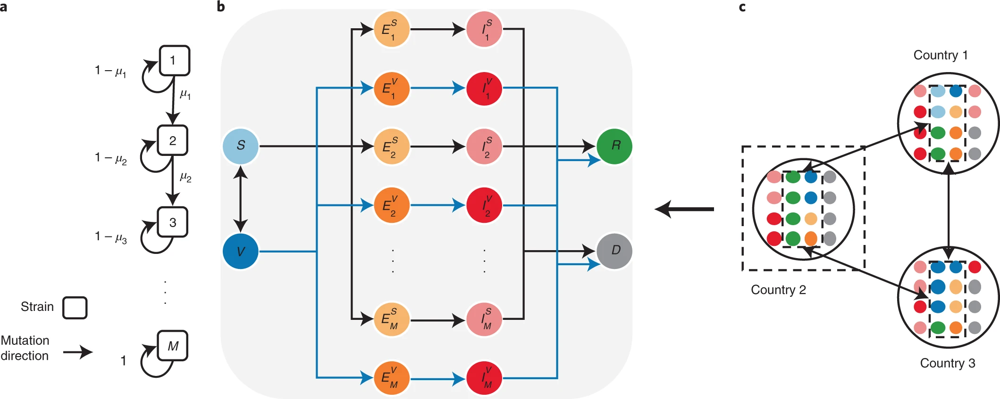
Jing, F., Ye, Y. (joint first author), Zhou, Y., Zhou, H., Xu, Z., Lu, Y., et al.
(2022). Modelling the geographical spread of HIV among MSM in Guangdong, China: a metapopulation model considering the impact of pre-exposure prophylaxis.
Philosophical Transactions of the Royal Society A, 380(2214), 20210126.
2021
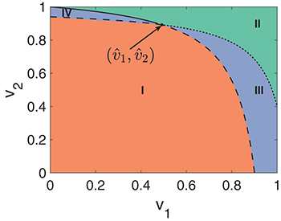
2020
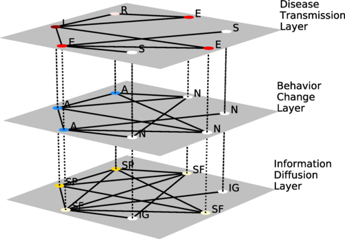
Ye, Y., Zhang, Q., Ruan, Z., Cao, Z., Xuan, Q., & Zeng, D. D.
(2020). Effect of heterogeneous risk perception on information diffusion, behavior change, and disease transmission.
Physical Review E, 102(4), 042314.